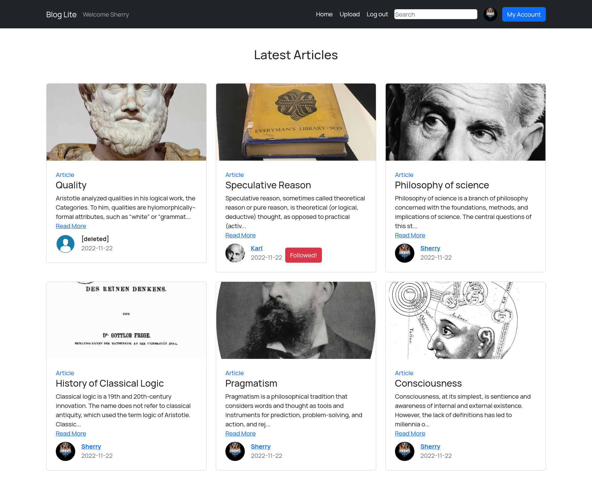

Indic Parler-TTS
The Indic Parler-TTS project delivered a cutting-edge multilingual text-to-speech model capable of synthesizing speech across 21 languages, encompassing 20 Indic languages alongside English. Built upon the robust Parler-TTS architecture, this model empowers users with fine-grained control over various speech characteristics through the use of descriptive text prompts. This sophisticated approach enables the generation of highly nuanced and natural-sounding speech, catering to the diverse linguistic needs of a multilingual user base.

My primary role involved curating and preparing the 8,385-hour multilingual speech dataset. This included data gathering, cleaning, and detailed caption annotation, crucial for the model’s ability to produce nuanced speech.
I was involved in the experimental phase, helping with training setup, monitoring performance, and analyzing results. I contributed to refining training strategies and troubleshooting issues. My observations on model performance also helped guide the project, contributing to a successful multilingual TTS solution.
BDM Capstone Project: Decoding Real-World Business Challenges

Embark on a journey through my Business Data Management (BDM) Capstone Project, where I tackled substantial business issues in collaboration with a Cafe. From formulating a comprehensive proposal to presenting compelling insights in the final report, the project scored an impressive total of 92. Delve into the anonymized reports and witness the intersection of data science and practical problem-solving.
Machine Learning Algorithms
This website is a comprehensive resource for machine learning algorithms. Here, you will find explanations of the most popular algorithms, as well as code implementations in Python.
The website is divided into two main sections: supervised learning and unsupervised learning. Supervised learning algorithms are used to learn from labeled data, while unsupervised learning algorithms are used to learn from unlabeled data.

BlogLite v2

Blog-Lite is a web app created with Vue3 and python-flask that lets users create and share text and image blogs. Users can follow, search and comment on other blogs. It also has a Rest API for limited data access and modification.
Repo Link: https://github.com/SherryS997/Blog-Lite-v2
Building a Cat Image Classifier using Neural Networks from Scratch
This project showcases the implementation of deep learning algorithms from scratch for cat image classification using NumPy and SciPy in Python.
The neural network architecture is developed within a Jupyter Notebook, emphasizing the creation of layers, activation functions like ReLU and Sigmoid, and training procedures.
Quarto is utilized to convert the notebook into a webpage, presenting an accessible overview of the custom-built deep learning algorithms employed in the classification of cat images.

Exploring Regularization Techniques in Neural Networks for French Football Corporation

This project explores the implementation of deep learning algorithms, focusing on neural networks and regularization techniques like L2 and Dropout, applied to optimize ball kicking positions for French football players.
The project was primarily built using Python’s NumPy and SciPy libraries to create the neural network from scratch.
The notebook has been converted into a webpage using Quarto.
Neural Image Style Transfer using PyTorch
This project shows how we can use PyTorch to mix different artistic styles in images using something called neural image style transfer. It’s like blending different painting styles onto different pictures.
It talks about using pre-trained VGG19 models, which are like tools that help us understand images better. The notebook explains how to take out important details from images and define a way to measure how close or different two images are. Then, it uses these methods to slowly change one picture’s style to look more like another picture. This notebook is a good starting point for anyone interested in mixing different artistic styles in images. It helps to understand how images can be changed to look like different art styles by combining their content and artistic details.